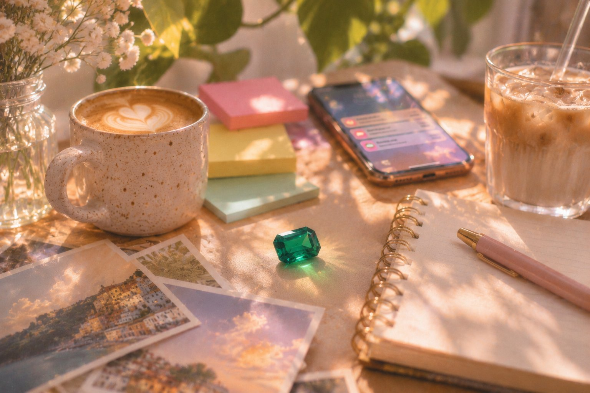
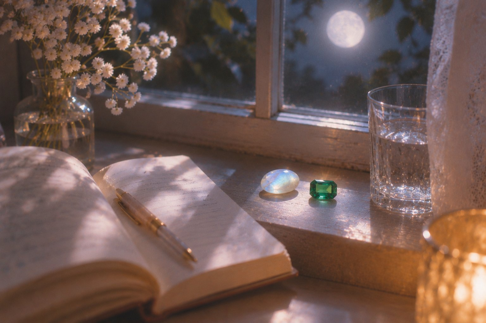

You can talk to someone for three hours, then suddenly wish you could disappear for three days. Your friends think they know everything about you because you tell them practically everything. Well, almost everything. Gemini (May 21 to June 20) has two birthstones, emerald and moonstone. Naturally, one color wasn't going to be enough.

The Gemini everyone knows
Why Is Gemini So Much Fun to Be Around?
You start telling a story, interrupt yourself with another story, and somehow end up explaining something that happened six years ago.
Your group chat would be considerably quieter without you. Even a trip to the supermarket can produce enough material for an entire evening of conversation.
You collect random facts, strange questions, and little observations about people.
Emerald, the vivid green birthstone of May, matches this sparkling side of Gemini. Bright, fresh, endlessly curious.
People never quite know where a conversation will take them when they're talking to you.
The Gemini nobody sees
What Happens When You Finally Stop Talking?
Surprisingly, quite a lot.
You've imagined entire lives in cities you've never visited. Sometimes a stranger on the train becomes a character in a story you'll never write.
You have questions about yourself that you've never asked out loud, even to your closest friend.
And occasionally, you feel homesick for somewhere you've never been.
Moonstone, a birthstone of June, mirrors this hidden side with its soft, milky shimmer. Like moonlight falling across a bedroom wall.
For someone who always has something to say, there are remarkably quiet places inside you.
Two girls sharing one mirror
Can Gemini Be Two Completely Different Girls?
Yesterday you wanted to go everywhere and meet everyone. Today, answering a single message feels like a full afternoon's work.
Apparently, this makes you confusing.
The Gemini symbol shows twins, and you probably understand why better than anyone.
One twin wants to know everything about the world. The other wonders whether there's an entirely different world somewhere inside her.
Emerald mirrors the bright curiosity. Moonstone matches the quieter imagination underneath.
People assume that because you're easy to talk to, you're equally easy to understand. They sometimes forget how much remains undiscovered about you.
After the last message
What Happens After the Group Chat Goes Quiet?
It's 2 a.m. Your phone finally stops buzzing, and you put on a playlist that would genuinely surprise your friends.
You stare at the ceiling and wonder what your life might look like in five years.
Then you open your journal, write something unexpectedly beautiful, and immediately feel embarrassed about it.
Tomorrow, you'll probably be making everyone laugh again.
Tonight, there's something lovely about the milky glow of moonstone. Nobody needs you to be interesting, funny, or entertaining.
For once, the person you're most curious about is you.

When your bright green side wants out, Gemflow turns emerald into slow-moving light on your phone, so you can watch that color for once.
Gemini has two birthstones, emerald and moonstone, because even the brightest conversation reveals only half of you.